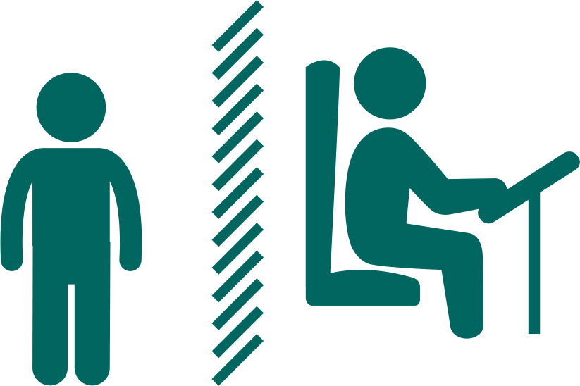

I |
nternational |
T |
ravel |
|---|
| COVID-19 UPDATE! | ||
|---|---|---|
| we’re doing everything we can to keep you as safe as possible | ||
Disinfecting every vehicle every day |
Requiring masks |
Upgraded air filters |
Sending more buses for busy routes |
 Safety partitions |
Physical distancing |
| NEWS! | |
|---|---|
Mask usage up to 88%! Dispensers added to 200 more buses. |
|
We currently installing mask dispensers on another 200 buses. In total, We will have installed dispensers on more than 340 buses by December Masks are especially important because a significant number of people are COVID-19 positive but don’t have symptoms. Masks protect people from both symptomatic and asymptomatic transmission of COVID-19. Furthermore, the Centers for Disease Control and Prevention (CDC) has found that not only does wearing a mask protect others, it protects you, too. In their words, ‘Masks also help reduce inhalation of these droplets by the wearer. |
|
Metro Manila-Davao City bus route to reopen soon! |
|
The bus route between Metro Manila and Davao City will soon reopen, the Land Transportation Franchising and Regulatory Board (LTFRB) said Thursday, as the government sought to increase mass transport capacity in a bid to boost the pandemic-battered economy. |
|
Traveling on christmas? Here are tips for your convenience! |
|
|
|